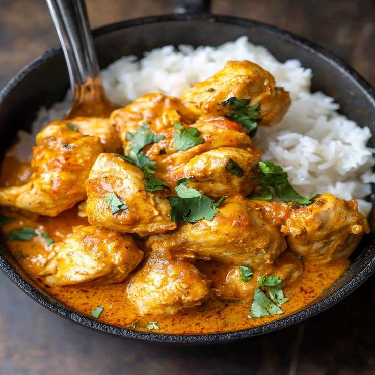

Curry Recipe
Home

Curry
a dish composed with a sauce or gravy seasoned with a mixture
of ground spices that is thought to have originated in India and has
since spread to many regions of the world.
Ingredients
- onion
- garlic
- ginger
- masala, curry powder
- tomatoes
- whipping cream
- Chicken
Step by Step
- Brown the meat
- Sweat the onions
- Add the spices
- Simmer the curry
- Enjoy!